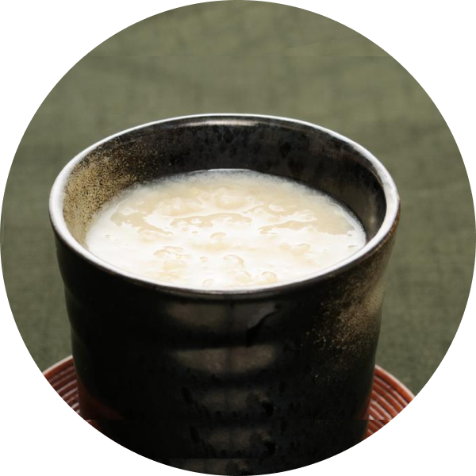

甜酒釀
甜酒釀又稱甘酒，是一款自日本奈良時代，就廣泛被日本人飲用的傳統甜飲。最早可以追溯到日本的古墳時代，在古籍「日本書紀」內有「天甜酒」飲料的相關記載，相傳即為當今甘酒飲料的起源。平安時代，甘酒是一款被貴族階層喜愛的飲料。江戶時代，甘酒的飲用族群開始擴及到一般的庶民階層。為了使身體能抵禦夏天的酷暑，這時的日本街頭出現了扛著扁擔販賣甘酒的甘酒小販，也因此令甘酒成為大街小巷都熟知的一款飲料。甘酒的製作方式隨著地域而有不同，有以砂糖融入酒糟中製作的甘酒，也有將米麴糖化後製成的甘酒。